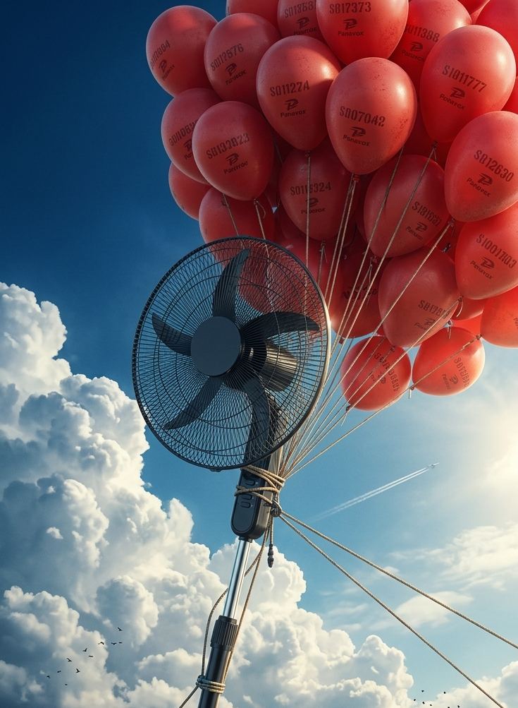
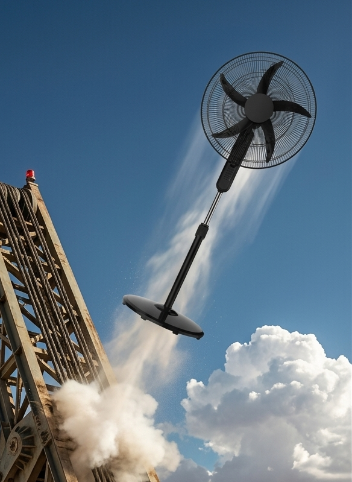
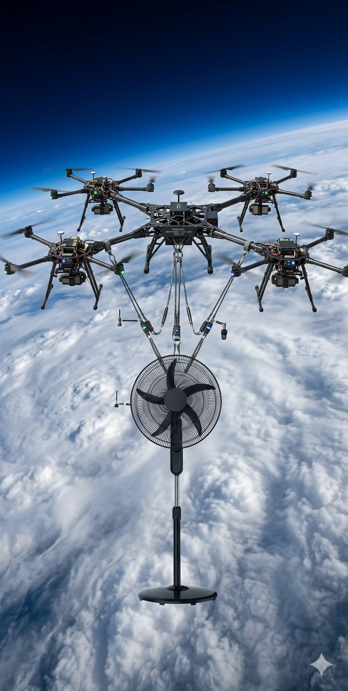
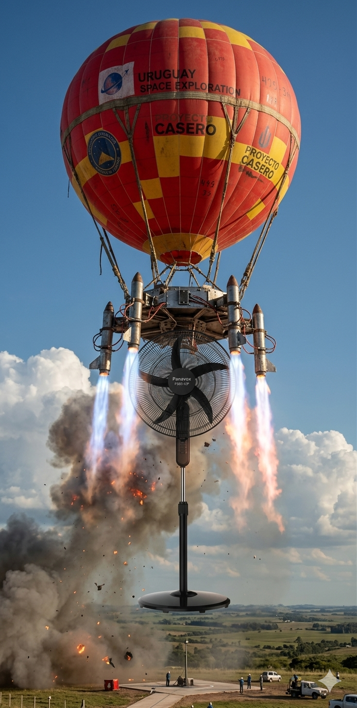
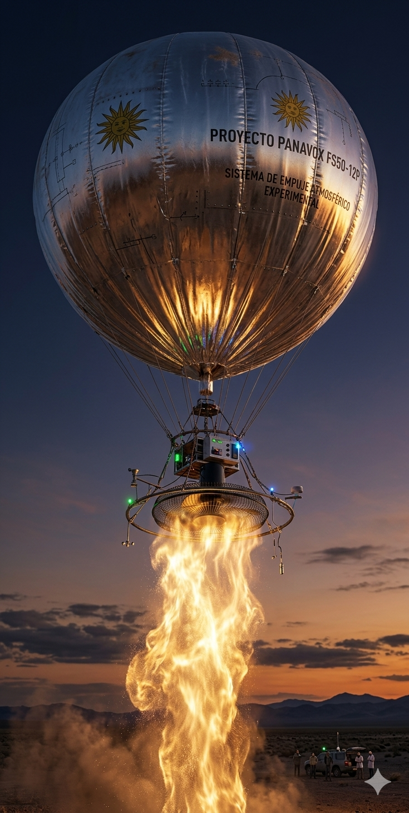
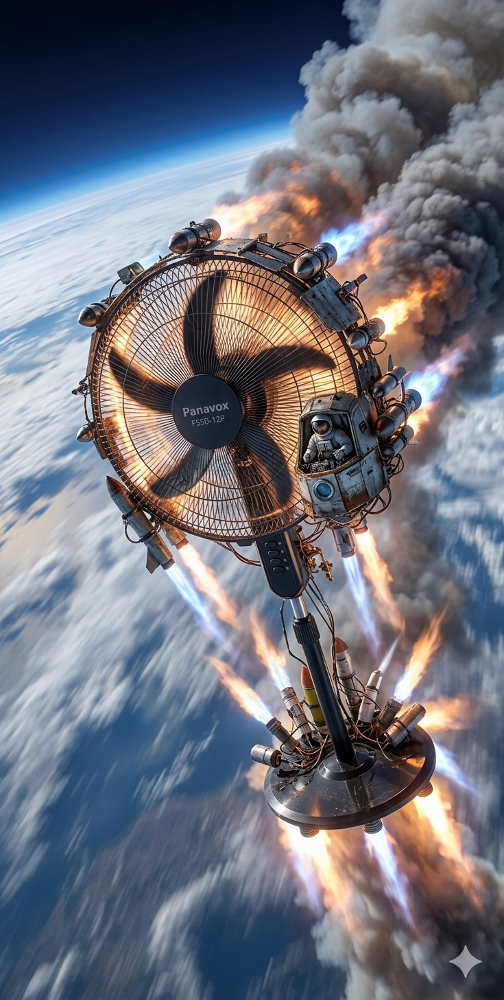

Atarle 287 globos meteorológicos de alto altitud inflados con helio puro en configuración octaédrica para ascenso sostenido hasta el espacio.

Lanzar el ventilador con una catapulta de tensión reforzada a 51° de elevación alcanzando 1.240 km/h para trayectoria suborbital.

Acoplar nueve drones de carga pesada en formación hexagonal con control de enjambre para ascenso autónomo hasta 112 km de altitud.

Combinar un globo de helio de 4.2 metros con seis cohetes modelo en configuración thrust-vectoring para fase final de aceleración espacial.

Construir una envolvente de mylar de 6.8 metros y activar el motor del ventilador durante 78 minutos para generar columna térmica que eleve el aparato al espacio.

Acoplar doce propulsores híbridos a drones modificados en matriz hexagonal con handover automático a cohetes para alcanzar órbita baja.